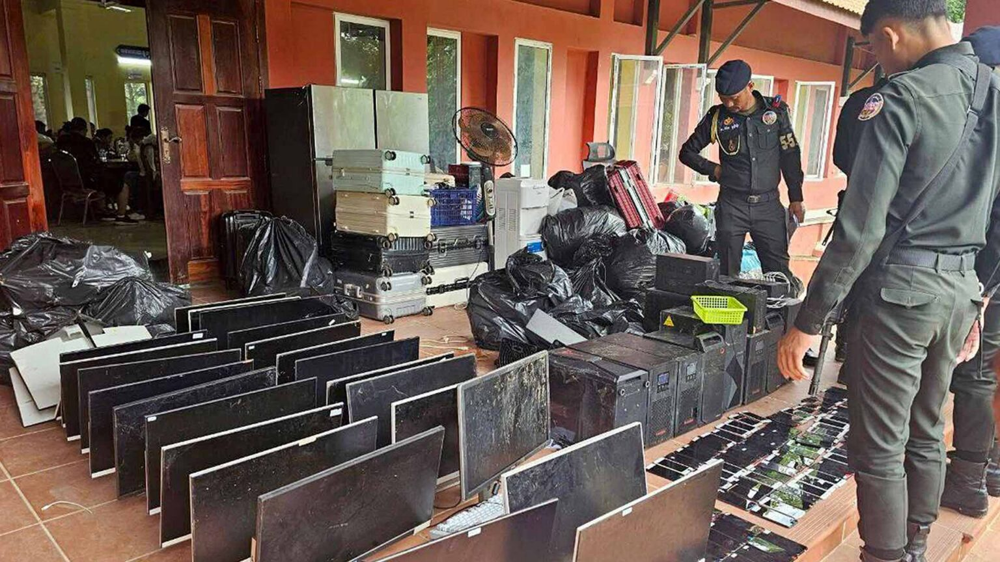
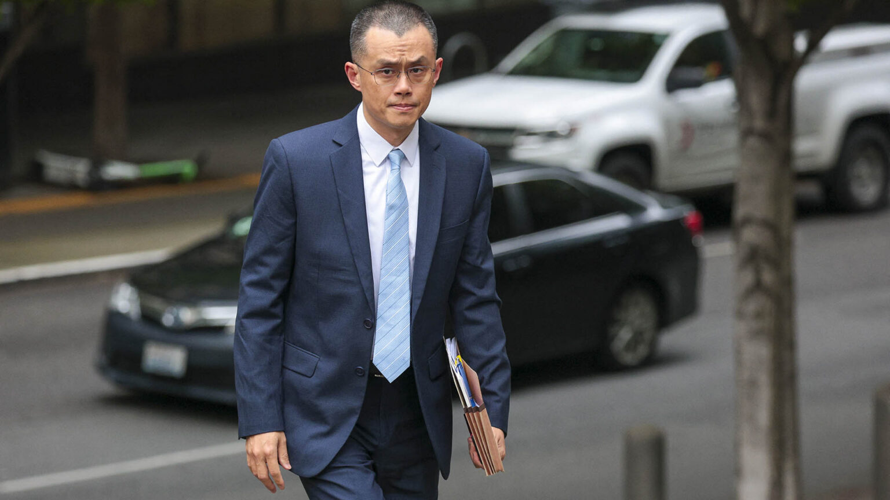
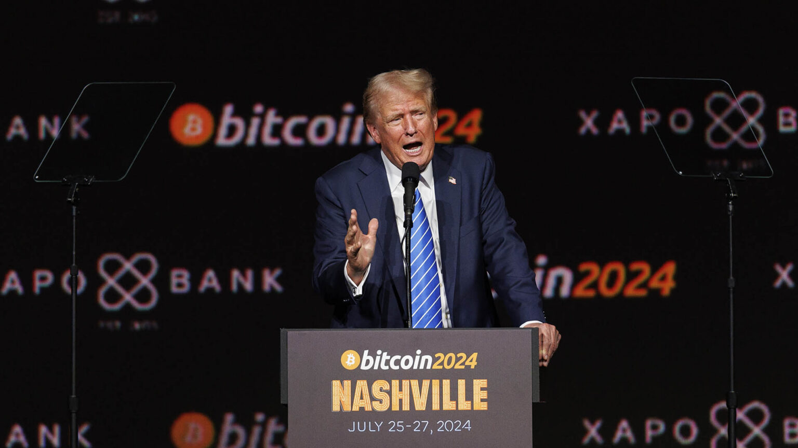
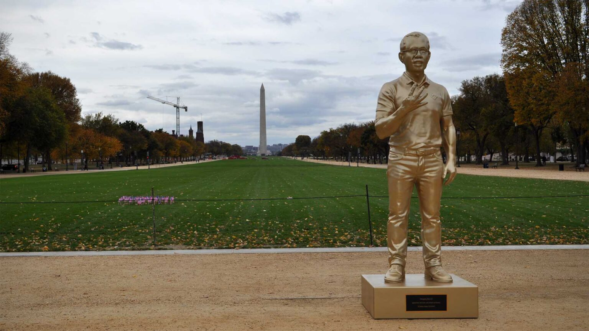

The International Consortium of Investigative Journalists traced tens of thousands of transactions and found major crypto trading platforms awash with dirty money. November 17, 2025
When President Donald Trump pardoned Changpeng “CZ” Zhao in October, the White House press secretary painted the founder of the world’s largest cryptocurrency exchange as the victim of a political witch hunt. “The Biden administration’s war on crypto is over,” declared Karoline Leavitt.
Zhao and his company, Binance, had both pleaded guilty in November 2023 to operating without basic safeguards to prevent money laundering. Authorities alleged that they authorized transactions bound for “terrorists, cybercriminals and child abusers.”
Zhao agreed to step down as CEO, and the company pledged to change its ways.
It did not.
Between the guilty pleas and Zhao’s pardon, Binance continued to profit from hundreds of millions of dollars in cryptocurrency transactions linked to some of the world’s most notorious organized crime groups, according to an analysis by the International Consortium of Investigative Journalists.
While the company was under the supervision of court-appointed monitors, at least $408 million worth of digital currency flowed to Binance accounts from Huione Group, a Cambodia-based financial firm used by Chinese crime gangs to launder proceeds from human trafficking and industrial-scale scam operations, ICIJ’s analysis showed.

Military police in Cambodia examine computer monitors, phones and other devices seized from a scam center in Cambodia. Some workers in these centers are victims of human trafficking, forced to work on crypto scams.Image: STR/POOL/AFP via Getty Images
Binance was not alone. In February, OKX, another of the world’s largest cryptocurrency exchanges, pleaded guilty in the U.S. to operating an illegal money transmitter and agreed to retain a court-mandated compliance consultant. Despite that oversight, customer accounts at OKX continued to receive hundreds of millions of dollars from Huione, including more than $161 million after the U.S. Treasury Department labeled Huione a “primary money laundering” concern in May, ICIJ found.
“Normally that halts everything,” said Ross Delston, a lawyer and anti-money laundering specialist. “If the federal government just told you that this entity is a high risk for money laundering or terrorist financing, you’d be crazy to continue any financial dealings with them.”
In response to questions about the Huione Group transactions, Binance said it works closely with global law enforcement and is an industry leader in identifying and reacting to suspicious deposits. “Users who transact with this service are subject to investigation by our compliance department, and appropriate action will be taken if any potential illicit activities are identified,” the firm said in a statement. The company said that crypto technology does not allow it to block deposits into its system. Binance did not provide details in response to ICIJ’s questions about whether the firm froze funds or closed accounts related to the Huione fund flows.
OKX told ICIJ that it invests heavily in compliance and that it “took proactive steps to restrict relevant accounts” even before the group was labeled a money laundering concern. OKX said that it has been working with the U.S. government on the matter, sometimes initiating engagement.
The routine use of brand-name exchanges by money launderers is just one of the findings from The Coin Laundry, an ICIJ-led cross-border investigation with 37 media partners in 35 countries that reveals how the companies provide the tools that criminals exploit to launder the proceeds of scams, theft, and other crimes — while those who’ve lost their savings or livelihoods are left with little hope of justice. The findings raise questions about whether exchanges are doing enough to stop illicit flows, either by freezing funds, closing accounts or carefully monitoring suspicious transactions.
Over the past 10 months, ICIJ and its partners collected hundreds of crypto wallet addresses — analogous to bank account numbers — associated with North Korean cyber thieves, Russian money launderers and large-scale scam operations. Using the wallet addresses, reporters traced tens of thousands of cryptocurrency transactions recorded on digital ledgers known as blockchains and found that illicit actors had either set up accounts at some of the biggest exchanges or sent tainted funds to accounts there.
Exchanges are important in the crypto financial system because, like traditional banks, they allow customers to set up accounts, store funds and make payments but unlike bank deposits, crypto funds are not federally insured. The companies also play a key role in facilitating illicit activity because they offer a fast way to convert ill-gotten cryptocurrencies into standard currency. For this reason, regulators and law enforcement have tried to push the exchanges to implement anti-money laundering safeguards.
Such actions could eat into exchanges’ revenues, which are largely derived from transaction fees.
“If they kick criminal actors off the platform, then that’s a big revenue source that they lose, so they have an incentive to allow this activity to continue,” said John Griffin, a blockchain data expert at the University of Texas at Austin. He has analyzed how funds from sophisticated impersonation scams flow through Binance, OKX and HTX, an exchange affiliated with Justin Sun, who has invested heavily in a Trump family cryptocurrency venture.
“Crypto offers criminals a financial system that’s very efficient compared to the old days when a cartel would have to stuff cash into the back of a Cadillac,” Griffin said.
ICIJ also found that a Binance-hosted address Treasury has attributed to a money launderer for Mexico’s violent Sinaloa drug cartel received nearly all its funding — more than $700,000 — from accounts at Coinbase, a U.S.-based cryptocurrency exchange. Funds from a notorious ring of Chinese traffickers of fentanyl and other drugs flowed to various accounts at OKX, and a Russian money launderer specializing in moving cryptocurrency for North Korea’s weapons program maintained an account at HTX, ICIJ learned. This account was active as of August. By then, Sun owned $75 million worth of the Trump family’s cryptocurrency, making him one of the largest investors in their crypto venture, World Liberty Financial.
Binance did not respond to specific questions about its hosting of a Sinaloa-linked cartel account. Coinbase said that it was aware of the transactions relating to the cartel, and, “through communications with the U.S. government, it resulted in the wallet address being sanctioned.” In response to questions about the drug trafficking wallets, OKX said “that it proactively worked with law enforcement on this matter, and was privately thanked for our efforts.” HTX did not respond to ICIJ’s questions.
The Coin Laundry also looked beyond the major exchanges to other types of crypto services with even fewer safeguards against surging financial crime. This included examining the murky world of so-called “cash desks” and courier services that specialize in changing cryptocurrency into hard cash and vice versa.
To see how digital currency is used to supersize scams, ICIJ and its partners examined Forsage, one of the largest alleged crypto scams in recent years. U.S. authorities accused Forsage’s leaders of stealing hundreds of millions of dollars over 2½ years using smart contracts — self-executing agreements written in computer code onto blockchains — that are extremely difficult to shut off.
Taken together, The Coin Laundry’s findings show how crypto companies profit from illicit activity with little fear of consequences while leaving those harmed by the criminals who use them without recourse. In the U.S. alone, the FBI estimates Americans lost $9.3 billion to crypto crimes in 2024, a 67% increase from the previous year. That’s roughly half the amount criminal financier Bernie Madoff collected from investors in his Ponzi scheme over four decades.
The industry claims cryptocurrency is easier to monitor than standard currency because transactions are recorded on a blockchain. But police often struggle to act on illicit cryptocurrency movements because the assets frequently pass through numerous anonymous wallets. Automated swapping services that let users switch cryptocurrencies without any due diligence can also help obscure the origins of coins or tokens before they reach the exchanges.
ICIJ also found that some of the biggest blockchain analytics firms, which position themselves as industry watchdogs, are hesitant to publicly name mainstream cryptocurrency exchanges in relation to dirty money.
To ensure the accuracy of findings across the investigation, ICIJ relied on more than two dozen individual blockchain analysts, including industry experts and academics, as well as an array of analytics firms, such as Crystal Intelligence and ChainArgos. To trace Huione’s activity, ICIJ developed its own methods for analyzing transactions done in the stablecoin tether. A stablecoin is a cryptocurrency whose value is pegged 1-to-1 to another asset, like the U.S. dollar.
The resources required to accurately trace crypto transactions make the task more difficult for both the exchanges and law enforcement. More than a dozen former compliance workers at major trading platforms, including OKX and Binance, told ICIJ and partner The Toronto Star they could hardly keep pace with savvy criminals.
“The main way to catch criminals would be waiting for them to mess up something,” Alessio Della Santa, a blockchain expert and former employee at two of the largest exchanges, told ICIJ.
In theory, regulators around the world are supposed to be looking over exchanges’ shoulders to make sure the company is complying with the law. But in practice, a patchwork of laws and fragmented enforcement efforts can mean less government oversight for an industry where the largest players facilitated tens of trillions in crypto trading last year.
"Crypto offers criminals a financial system that’s very efficient compared to the old days when a cartel would have to stuff cash into the back of a Cadillac" - blockchain data expert John Griffin
New consumer protection and transparency requirements took effect in Europe at the end of 2024. But in the U.S., Trump has overseen a rollback of enforcement actions against the crypto industry. Regulators have dropped civil lawsuits against Coinbase, Kraken and Binance, although the Justice Department continued criminal cases against OKX and Tornado Cash, a service used to obscure the origin of funds by mixing cryptocurrencies from different sources.
Even before that, the U.S. held crypto firms to lower standards for preventing money laundering than it does banks. U.S. regulators classify exchanges in the same category as money transmitters like Western Union. As a result, while multiple agencies supervise anti-money laundering practices at banks, crypto exchanges are overseen by the IRS’ small-business and self-employed division. The understaffed office has struggled in recent years to adequately oversee cryptocurrency operations, according to the agency’s inspector general.
Many of those on the front lines of combating crypto-related crimes also lack the tools, resources and training to trace stolen cryptocurrency, and they are often unable to recover lost funds.
“Law enforcement can’t cope with the overwhelming amount of illicit activity in the space,” said Julia Hardy, co-founder of the blockchain investigations firm zeroShadow, who works closely with scam victims and police around the world. “It can’t go on like this.”
‘A cop on the beat’
Since its inception during the 2008 financial crisis, cryptocurrency has evolved from a niche technology designed to free people from traditional financial institutions into an industry valued at $3 trillion to $4 trillion, with splashy Super Bowl ads and company names plastered on stadiums.
Crypto exchanges cleared the way for mass adoption by allowing users to hold and transfer digital assets without banks. But once exchanges began taking customer deposits, in most jurisdictions, they became subject to government regulations that apply to financial firms. This included safeguards — such as collecting customer information and monitoring transactions for suspicious activity — that make it harder for criminals to move money.
Countries have taken different approaches to regulating crypto firms. Some, such as China and Algeria, have banned trading cryptocurrencies. Others, such as Singapore and members of the European Union, require companies to be licensed and comply with anti-money laundering laws.
The Biden administration argued that most digital tokens should be treated as securities, effectively placing many exchanges under the jurisdiction of the Securities and Exchange Commission. “There were a lot of entrepreneurs that grew up in this field and chose to be noncompliant” with the law, then-SEC chair Gary Gensler told The New York Times in October 2022. “We will be a cop on the beat.”
That same year, after the spectacular collapse of the Bahamas-based exchange FTX, the SEC unleashed a flurry of enforcement actions against the crypto industry. It sued various exchanges for not being properly registered. Prosecutors also charged several, including Binance, with crimes related to money laundering.
After founding Binance in 2017, Zhao built it into the world’s largest exchange by charging some of the lowest transaction fees, investing in high-speed, high-volume trading technology and being willing to list new cryptocurrencies. It made Zhao one of the richest people in the world.

Founder and former CEO of Binance Changpeng “CZ” Zhao outside federal court in Seattle, Washington, in 2024. Zhao pleaded guilty to violating laws against money laundering. Image: Jason Redmond / AFP via Getty Images
Binance also sponsored sports teams and associations, especially in soccer and Formula 1 auto racing. It helped the soccer star Cristiano Ronaldo release his own branded digital token ahead of the 2022 World Cup.
By the end of 2023, Binance was handling half the trading volume across the largest exchanges — about $18.4 trillion out of a total of $35.2 trillion, according to research by CoinGecko. But, U.S. authorities said, Zhao and the company prioritized growth and personal wealth over following the law.
Federal investigators revealed that Binance accounts handled transactions worth more than $250 million for Hydra Market, a Russian darknet platform known to launder proceeds from illegal drugs, child sexual abuse materials, stolen credit cards and other crimes.
As part of his November 2023 plea deal, Zhao paid a $50 million fine and was later sentenced to four months in prison. Among other things, Binance was required to keep standard know-your-customer records, which invariably include name, address and date of birth, to know the source of funds and to report suspicious activity to authorities.
The following year, however, the crypto industry pushed back against both government enforcement and the prospect of new regulation by throwing their support behind then-presidential candidate Trump. Tyler and Cameron Winklevoss, co-founders of the Gemini exchange, publicly endorsed Trump and each gave $1 million in bitcoin to support his campaign. Kraken, Crypto.com and Coinbase also contributed $1 million each to Trump’s inaugural committee. Trump, who in 2021 had called bitcoin a “scam,” became the industry’s most fervent political booster, promising to make the United States the “crypto capital of the world.” In September 2024, he and his sons launched their own crypto venture, World Liberty Financial.
Trump’s second administration dropped enforcement actions against more than a dozen cryptocurrency firms and, in addition to Zhao, the president pardoned three founders of BitMEX who pleaded guilty to violating anti-money laundering laws. He also disbanded a Justice Department unit that investigated crypto-related crimes. In doing so, the department said it would still “pursue the illicit financing of these enterprises by the individuals and enterprises themselves, including when it involves digital assets, but will not pursue actions against the platforms that these enterprises utilize to conduct their illegal activities.”
The exchanges were off the hook.
Illicit flows
The Treasury Department’s labeling of Huione as a money laundering entity in May was in keeping with the administration’s policy toward criminal financing. This finding was coupled with the agency’s proposal to formally sever Huione from the U.S. financial system.
The reasons for Huione’s pariah status in the global financial system lie in abandoned hotels and hastily constructed barracks found across Southeast Asia, where Huione’s customers, Chinese organized crime groups, have set up grim call centers. Inside, hundreds of workers — many of them human trafficking victims — spend long hours finding and contacting victims on Facebook and other social media platforms. Posing as love interests or tech support, the scammers steer their targets to sleek websites masquerading as legitimate cryptocurrency platforms, promising lucrative investment opportunities. Once the targets pay up, the sites display what look like ballooning account balances. In reality, thieves are already laundering the target’s funds, often using major crypto exchanges to do so.
ICIJ examined tens of thousands of transactions worth hundreds of millions of dollars that Huione sent to customer deposit addresses at Binance and OKX. Over one year, Huione funneled an average of $1 million worth of tether per day to customer accounts at Binance, an ICIJ analysis found. Even after the group was labeled as a money laundering concern, that pace continued largely unabated.
ICIJ’s analysis showed that from July 2024 to July 2025, after its plea deal, Binance accounts received at least $408 million in tether from Huione. Separately, ICIJ found that OKX customer accounts received at least $226 million in tether from Huione after it pleaded guilty in February to operating an illegal money transmitter. As a part of their pleas, Binance had agreed to two compliance monitors to oversee its adherence to U.S. anti-money laundering laws and OKX had agreed to retain a compliance consultant.
ICIJ used public blockchain data to analyze transactions sent from cryptocurrency addresses published in a 2024 Chinese-language Huione quarterly financial report. Using data from Arkham Intelligence and Tronscan, blockchain data sources, ICIJ examined the flow of tether funds sent from three of these addresses to more than 35,000 deposit addresses used by Binance or OKX to collect funds from their clients. ICIJ then analyzed how funds moved from these deposit addresses to the large wallets that crypto exchanges use to consolidate and manage customer funds. ICIJ used a variety of sources to verify the exchanges’ ownership of these wallet addresses.
“Binance maintains the highest standards of security,” a spokesperson for the exchange told ICIJ, adding that the firm “continuously monitors for high-risk activity, transactions, and accounts to both mitigate risk and identify suspected bad actors across the crypto ecosystem, working closely with global law enforcement and leading vendors” in the digital asset space.
OKX said that it had subjected one of the three Huione cryptocurrency addresses highlighted in ICIJ’s analysis to enhanced transaction monitoring before the U.S. alert about the group in May. OKX said that after the Treasury Department finalized its blacklist on Huione on Oct. 14, it “paused all interactions between OKX wallets and Huione, until we can establish definitively that the account in question is being used exclusively for legitimate transactions.” OKX took this action after ICIJ sent detailed questions about its exposure to Huione.
“OKX has been actively cooperating with law enforcement and FinCEN on this matter, in some cases proactively initiating engagement,” an OKX spokesperson said, adding that these actions aligned with the firm’s strict anti-money laundering “policies and procedures, which are designed to detect, prevent, and respond to potential illicit activity on our platform.”
The U.S. Treasury Department and Justice Department did not respond to requests to comment on the Huione transactions. Binance’s two monitors and OKX’s compliance consultant did not respond to requests to comment on this story.

U.S. President Donald Trump pledged to make the U.S. the “crypto capital of the planet” at the Bitcoin 2024 conference in Nashville, Tennessee in July 2024. His re-election bid was backed by donations from prominent figures in the crypto industry.Image: Brett Carlsen/Bloomberg via Getty Images
A Huione affiliate, Xinbi Guarantee, received $95 million in tether payments from OKX accounts between July 2022 and June 2025, according to an analysis by blockchain analytics firm Crystal Intelligence.
OKX declined to comment specifically on its transactions with Xinbi Guarantee but said in a statement that it “may take action such as freezing and/or closing accounts that are suspected to be tied to illicit actors, as well as working with law enforcement agencies as appropriate.”
The exchanges also played key roles in moving stolen cryptocurrency from other bad actors. In late February, North Korean hackers pulled off the biggest crypto heist yet, stealing around $1.5 billion in cryptocurrency from the Dubai-based exchange Bybit. The Treasury Department has said the group’s past thefts have helped finance the country’s nuclear weapons program. The Bybit hack “in one fell swoop … wipes out a year’s worth of effort to put pressure on the North Korean economy,” Steve Biegun, a former U.S. deputy secretary of state in Trump’s first administration, recently told a BBC podcast.
The North Korean launderers quickly began to route big portions of the stolen funds to a crypto service called THORChain that lets people swap one digital currency for another. They were converting stolen ether, a popular cryptocurrency, into bitcoin. But for this large-scale currency conversion to work, someone would have to buy the stolen ether, and a lot of it.
That’s where Binance came in.
ICIJ asked the transaction tracing firm ChainArgos to examine five Binance deposit addresses that mostly received assets from THORChain. ChainArgos found a dramatic spike in deposits to these addresses from THORChain of more than $900 million — all in ether — during the 10 days the stolen ether was coursing through THORChain.
And in some cases, ChainArgos traced ether flows from the suspected North Korean laundering group to the Binance accounts via THORChain.
There is no evidence that the Binance accounts in question were controlled by the North Korean money launderers. Experts told ICIJ the hundreds of millions in ether likely changed owners during the THORChain transactions before these funds reached Binance accounts. Still, according to blockchain analysts, Binance should have taken action because it was receiving substantial sums from a service that was playing a key role in large-scale money laundering.
“Binance should have caught these,” Jonathan Reiter, CEO of ChainArgos, told ICIJ. “Even a bad — maybe even defective — screening tool would spot that.”
Binance did not respond directly to questions about the spike in inflows it received from THORChain. “Security and compliance stand as utmost pillars at the core of Binance’s operations,” Binance spokesperson Heloiza Canassa said. “The exchange dedicates over 1,280 employees and invests millions of dollars every year to provide a safe and trustworthy platform for users and the Web3 ecosystem as a whole.”
Canassa added that the firm has a multilayered compliance program “built on robust and fast paced” transaction monitoring, and know-your-customer and anti-money laundering processes.
In response to questions about the transactions, THORChain told ICIJ that the five Binance deposit addresses appeared to be held by traders and were “not controlled by or associated with THORChain.” THORChain said that those traders would have had no visibility into the origin of the coins they received.
Binance has reportedly clashed with the court-appointed monitors put in place as part of its 2023 plea agreement. Bloomberg reported in September that Binance was nearing a deal with the Justice Department to drop the requirement for independent oversight.
In April, The Wall Street Journal reported that Binance staff were “discussing changes to its anti-money-laundering controls that were viewed by some employees as an effort to loosen its checks on riskier customers.” Binance decried the “inefficient and costly burdens” imposed by the monitors.
Several blockchain experts told ICIJ that many exchanges don’t closely scrutinize deposits coming from swappers like THORChain, even though the origin of such funds can often be murky unless an analyst manually traces backwards through the swapper to their source. “After the money comes out of the swaps, most exchanges treat it as clean money,” said John Griffin, the University of Texas professor. “[This] gives them plausible deniability.”
Russian money launderers have also relied on major cryptocurrency exchanges to conduct their business, ICIJ found.
U.K. authorities in December announced Operation Destabilise, the takedown of two money laundering networks that specialized in exchanging cryptocurrency for hard cash and vice versa. The U.K.’s National Crime Agency said this was its largest anti-money laundering operation in a decade. The Smart and TGR groups — which the agency identified as Russian-speaking crime networks that work together — had moved money for a variety of organized crime groups, including the Kinahan cartel, Irish cocaine traffickers that Interpol has linked to at least 20 killings. Authorities also said the two networks were funding ransomware groups and “Russian espionage operations.”
ICIJ’s analysis found that U.S.-based crypto giant Kraken provided an account through which key TGR figure Elena Chirkinyan helped arrange bulk exchanges of cryptocurrency and standard currency.
In response to questions from ICIJ about this account, a Kraken spokesperson said it cooperates “with law enforcement authorities globally, including on matters such as” the Treasury Department’s sanctioning of the wallet address in question. “Kraken continuously monitors individuals, groups, and entities subject to sanctions to ensure full compliance with applicable laws,” the spokesperson said.
Between 2019 and 2021, a wallet controlled by Khadzhi Magomedov of the Smart group sent or received at least $40 million in cryptocurrency directly to and from accounts at Binance, according to an analysis by ChainArgos. WhiteBIT, a Lithuanian exchange, sent at least $8 million more directly into Magomedov’s wallet, which sent an additional $5 million to accounts at HTX, then called Huobi, according to data that ChainArgos compiled for ICIJ.
HTX did not respond to requests for comment. Binance said in a statement it cannot block incoming crypto transactions and that this is “a fundamental feature of all digital asset transactions.” WhiteBIT did not provide answers in time for publication.
“What we have seen is that these networks have heavy exposure to market-leading crypto exchanges,” said a U.K. law enforcement agent who worked on the case and spoke with ICIJ on the condition of anonymity. “[This] allows them to cash out into traditional currency or effectively give the cryptocurrency a veneer of legitimacy as they move it on.”
‘No one’s doing anything’
Operation Destabilise was a rare triumph for law enforcement in the fight against cryptocurrency-related crime. More often, though, authorities struggle to stop it or to get back stolen funds.
Canadian Carrissa Weber lost thousands of dollars to a scam that asked for transfers in cryptocurrency, and says she was told by authorities not to expect to get her money back.Image: Leah Hennel
ICIJ and its media partners interviewed 45 victims of sophisticated cryptocurrency scams on four continents. In the majority of cases, ICIJ found that funds from the alleged scammers’ wallet addresses were channeled to accounts at major cryptocurrency exchanges, including Binance, OKX, HTX and Bybit. Of those victims who reported the thefts to law enforcement, most saw their cases go nowhere, like Carrissa Weber.
Earlier this year, the 58-year-old, who lives outside Calgary, Alberta, was desperate to find work, applying for customer service jobs, administrative roles and numerous jobs in skin care. For years, Weber had sent her résumé to more employers than she could count. So she was thrilled to hear from a person in March claiming via WhatsApp to have reviewed her résumé. Soon, the recruiter put Weber in touch with “Emily,” a friendly manager for a supposed startup of sorts that was seeking people to both invest in and perform hourly labor. Weber was in.
“I’d been on such a tight budget for three years,” Weber said in an interview with ICIJ. “To find myself with a little more money — it’s like you’re optimistic and hopeful and thinking, ‘Maybe this will help me get ahead.’ ”
It was a trap. U.S. authorities have flagged the growing prevalence of these so-called task scams, warning that “there aren’t any commissions and nobody but the scammers make any money.”
Weber lost more than $25,000 — her life savings, including loans that the platform had encouraged her to take out. When she alerted authorities, they told her, “ ‘You’re not going to get your money back,’ ” she recalled. Her follow-ups have gone unanswered.
“My case is sitting in a filing cabinet and no one’s doing anything with it,” Weber said.
The Royal Canadian Mounted Police, the agency Weber reported the theft to, did not comment on the case.
In many jurisdictions, few local and regional police forces have the requisite cryptocurrency training on the expensive private blockchain tracing software often necessary to carry out cryptocurrency investigations. But the path of Weber’s stolen funds was easy to trace. It landed in cryptocurrency wallets that sent most of their funds on to two OKX deposit accounts, according to an ICIJ analysis of the wallet addresses Weber sent money to.
"My case is sitting in a filing cabinet and no one’s doing anything with it" — scam victim Carrissa Weber
In early August, ICIJ sent OKX detailed questions about Weber’s case, including the OKX cryptocurrency wallet addresses where we found her scammers had deposited most of their funds. In late October, an OKX spokesperson told ICIJ that the firm froze these accounts earlier that month because they had links to Huione and had “demonstrated other suspicious characteristics.” The spokesperson also said that the accounts in question had been “subject to enhanced monitoring by OKX” since November 2024.
Besides losing her nest egg, Weber said she had borrowed money against her home, which had been paid off. She is in need of income more than ever. “I’m so far into debt now,” she said.
In Tokyo, Asako Nishizaki, a 68-year-old woman who works for an artificial intelligence startup, lost more than $74,000 over 3½ years to a man she met on the dating website Match.com. The man, who went by the name “Milan Novak,” told her he was 58, Croatian and worked in Sydney. They began an intense online relationship during which he asked her for financial help. She sent payments, first through remittance services like Western Union and World Remit, then to cryptocurrency wallet addresses he supplied.
Nishizaki paid more than $30,000 in dozens of cryptocurrency transfers between March 2024 and June 2025, according to transaction records she provided to ICIJ.
She lost her condo and had to move into a social housing unit, she said, and her relationship with her two sons was strained.
“They felt like I betrayed them,” Nishizaki said. “I have been a single mother since they were 2 and 3 years old, and I dedicated myself to raising them, and I didn’t have my own life for a long time. … For almost one year they didn’t talk to me at all. Just one month ago, my second son told me it was OK, ‘I forgive you.’ ”
She reported her loss to two police stations and was told it was impossible to do anything because her scammer was overseas.
“The Japanese police don’t do anything,” Nishizaki said. Authorities in Kanagawa Prefecture, in response to questions from ICIJ partner Nippon TV, said they could not comment on individual cases.
Asako Nishizaki fell victim to a romance scam, and has since lost her home.Image: Unknown
To comply with anti-money laundering laws, cryptocurrency exchanges monitor transactions internally using tools from blockchain analytics firms like Chainalysis and TRM. But Pamela Clegg, a longtime blockchain investigator who has done work for crypto firms and banks, said the exchanges often take a more casual, less scientific approach to assessing suspicious transactions than banks do.
“There’s not the same level of rigor,” Clegg said. “This is where the real lack of oversight is in the cryptocurrency industry.”
In the banking sector, for instance, regulators expect firms to show proof that they have carefully tested their systems for monitoring dirty money. This process seeks to ensure that banks are flagging an appropriate amount of risky accounts or transfers for their compliance officers to investigate further. Too many flags can swamp compliance officers, while too few can allow dirty money to pass unnoticed.
Scammers and other launderers of cryptocurrency often move illicit assets between numerous anonymous addresses before depositing the funds at an established exchange. Exchanges could more closely scrutinize funds that made hops between multiple unknown addresses or move through swappers, according to experts.
"For crypto, the customers are abundant, so they want quantity over quality, and the agents make a lot of mistakes." — former anti-money laundering analyst at OKX
Compliance workers at some of the largest exchanges are often overwhelmed and under-resourced, according to more than a dozen former employees of major exchanges who spoke with ICIJ and The Toronto Star.
“The volumes are insane,” said a former Coinbase employee, who spoke on the condition of anonymity to discuss his experience at the company. “The number of cases in relation to the workforce is 100% unbalanced.” (Coinbase did not respond to questions about these comments.) A former analyst in the anti-money laundering department at OKX said workers dealt with an endless stream of alerts. They were expected to process each one within a few minutes, she said, adding: “For crypto, the customers are abundant, so they want quantity over quality, and the agents make a lot of mistakes.”
An OKX spokesperson said its global team uses “a combination of experienced compliance professionals and advanced AI-driven monitoring systems to ensure that every alert is reviewed efficiently and thoroughly.” The company added that it has partnered with blockchain analytics firms such as Chainalysis and is part of “a real-time law enforcement collaboration platform that allows us to identify and escalate suspicious activity quickly and securely.”
The former employees said a company’s commitment to compliance boils down to one thing: resources. Compliance work is expensive, and it doesn’t generate revenue. Its impact is not apparent in the company’s bottom line. Even companies that work in highly regulated jurisdictions and claim to be committed to implementing strong controls are often unwilling to invest the money needed to manage their compliance needs, the former employees said.
Alessio Della Santa, who worked on compliance at Binance until September 2024, told ICIJ that his office was not empowered to do meaningful investigations into suspicious transactions, even after Binance pledged to do better. Della Santa described investigating numerous frivolous-seeming cases involving tiny sums of money, which made it difficult to devote sufficient resources to reviewing more-serious ones.
“When it’s only for $2 or $3, you’re like, ‘What am I even doing?’ ” Della Santa said. “You’re losing time. You could have been checking more important cases.”
Della Santa said the company did not provide compliance staff with enough information about customer accounts, including home addresses. That was “crazy because that’s kind of important to see,” Della Santa said. He said these information gaps led to accounts remaining active even though they appeared to be linked to criminal activity. “This made it very not fulfilling,” Della Santa said.
‘It’s ruined me as a person’
When exchanges miss red flags, it can have devastating consequences for victims, like a Minnesota father who lost more than $1 million to a phony investment platform.
The man, who asked to remain anonymous to protect his family’s privacy, said he contacted more than a half-dozen law enforcement agencies, begging for help.
“My family and I were left financially shattered and emotionally broken,” he wrote in a March email to a Minneapolis-based FBI victim specialist that he shared with ICIJ. “Please don’t let this be another case that gets lost in the system. My family’s future depends on this.”
The agent responded with the number for a mental health helpline. When law enforcement wasn’t able to recover any of the stolen money, the man hired a private blockchain investigator who traced more than $500,000 of the missing funds to customer accounts at Binance and other exchanges. ICIJ worked with experts to independently confirm the path of these funds.
Law enforcement in Minnesota also shared with ICIJ customer files Binance provided in response to a subpoena in the case. The customer photo for one account that moved more than $7 million worth of tether in a matter of months ending in July of last year shows a woman in front of a corrugated metal wall. The file lists a home address in a rural Chinese village.
Another Binance customer file is in the name of a 24-year-old woman with a home address in a rural village in Myanmar where most people cook meals over firewood. Over a nine-month period ending in mid-2024, that account moved $2 million in tether — more than a thousand times the average annual salary in Myanmar.
Neither file contained information on the source of the accounts’ funds or the nature of their business.
Erin West, a former prosecutor and founder of Operation Shamrock, a nonprofit focused on stopping cyber scams, reviewed both files for ICIJ and said they appeared to be cryptocurrency “money mule” accounts that criminals open in the names of people who are not linked to the transactions. Or the accounts were opened by victims of human trafficking made to work in scam compounds, West said.
“There’s nothing that appears legitimate about this in any way,” West said. “We see this all the time.”
Binance declined to comment on this case.
Paul DiLello, another victim of a cryptocurrency investment scam who lost more than $150,000, told ICIJ his experience has changed him for the worse.
In November 2024, the 67-year-old, who lives in Albany, N.Y., was approached by a woman on Facebook with whom he appeared to have mutual friends.
DiLello began texting the woman, who went by Braelyn Ayra, on WhatsApp. When she proposed an investment with great returns, he was interested.
He had worked for Verizon for over 15 years and had taken a lump sum payout instead of a pension when he retired in 2019. He put the money — $100,000 — into an individual retirement account (IRA). But he hoped to grow his savings.
DiLello made a small investment through “OnChain,” a platform Ayra recommended, and got an initial $1,900 return, which cemented his confidence in the scheme, he said. He used some of the money to buy his wife a gift and take her to dinner. (This platform is not the same as the crypto service Onchain, owned by Crypto.com.)
Before long, he had cashed out his IRA and pulled additional money from a separate savings account and invested it in OnChain. He would never see that money again. An ICIJ analysis shows his funds were moved into an OKX deposit wallet a day after he made his “investment.”
OKX did not provide comment on this case.
"They rob you blind, and there’s no end result. There’s no justice. There’s not anything." — scam victim Paul DiLello
DiLello and his wife aren’t sure if they will have to pay taxes on the retirement funds DiLello withdrew. The scam caused tension in his marriage, DiLello said, and changed him in ways he doesn’t like.
“I lost faith in so much, I don’t trust people anymore,” he said. “It’s ruined me as a person.”
When DiLello went to his local police station to report the crime, the responding officer said he didn’t want to give DiLello any false hope, adding that a similar scam had happened to the officer’s father-in-law. That left DiLello angry, at the lack of recourse and the scammers’ impunity.
“You’ve got entities that are just scammers out there. They … act as though they’re working on legit business for you and they’re not. And they rob you blind, and there’s no end result,” DiLello said. “There’s no justice. There’s not anything.”
‘Capital of Crypto’
On a Tuesday in late October, a 10-foot-tall statue of Zhao appeared on a gravel pathway less than a mile from the U.S. Capitol. The statue, made of dense foam and spray-painted gold, showed Zhao holding up four fingers, a reference to his 2023 New Year’s resolution that has become a symbol of defiance against crypto skepticism.

A 10-foot golden statue of Binance founder Changpeng Zhao was placed by crypto activists on the National Mall in October, to celebrate Zhao’s presidential pardon.Image: Sam Ellefson / ICIJ
Nearly 11 months after making the resolution, the Binance founder and his company pleaded guilty to money laundering violations — the offenses that Trump pardoned him for.
When a CNN reporter asked the president about the decision on Oct. 23, Trump replied, “Are you talking about the crypto person? A lot of people say that he wasn’t guilty of anything. … And they said that what he did is not even a crime.”
Zhao — now promoting the Binance offshoot BNB Chain — expressed his thanks on X. “Deeply grateful for today’s pardon and to President Trump for upholding America’s commitment to fairness, innovation, and justice,” he wrote. “Will do everything we can to help make America the Capital of Crypto.”
Less than a week later, the golden statue by the Capitol was installed by a small group of crypto enthusiasts to celebrate Zhao’s pardon. Hichem Zaghdoudi, 31, their spokesman, stood near it livestreaming gawking passersby.
Zaghdoudi and his team also launched a “CZ statue” meme coin and offered to send the physical statue to Zhao. “We made it for you,” they wrote on X, asking for a shipping address.
Zhao turned them down.
“While I want to appreciate the gesture, the fact that there is a meme coin associated with this [statue] means the creator probably just wanted to make a quick buck off an interaction from me,” he wrote on X the next day. “This is something I don’t appreciate.”
The comment was enough to send the value of the coin crashing, CoinDesk later reported, leaving more than 1,000 holders with “near-worthless” coins.
By that Friday, the billionaire had stopped posting about the pardon and was back to promoting BNB Chain.
“Happy Halloween,” he wrote on X. “We are hiring.”
Update Nov. 28, 2025: WhiteBIT, a cryptocurrency exchange, provided a statement to ICIJ after publication. In response to questions about payments to a wallet controlled by Russian money launderer Khadzhi Magomedov, a WhiteBIT spokesperson said the transfers were made by a third-party service using the exchange’s blockchain infrastructure. WhiteBIT said that it severed ties with this service in early 2022 for failing to meet WhiteBIT’s compliance standards. The company said it “works closely with blockchain analytics providers and regularly cooperates with law-enforcement agencies in multiple jurisdictions.”